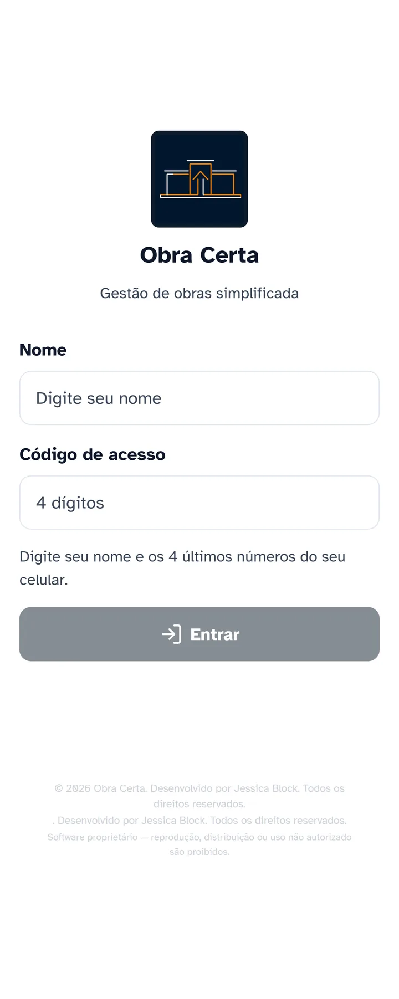
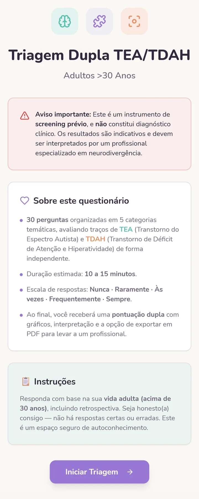
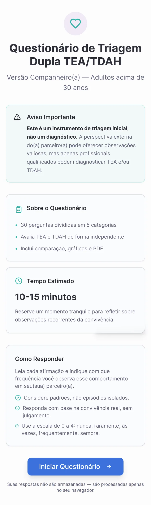
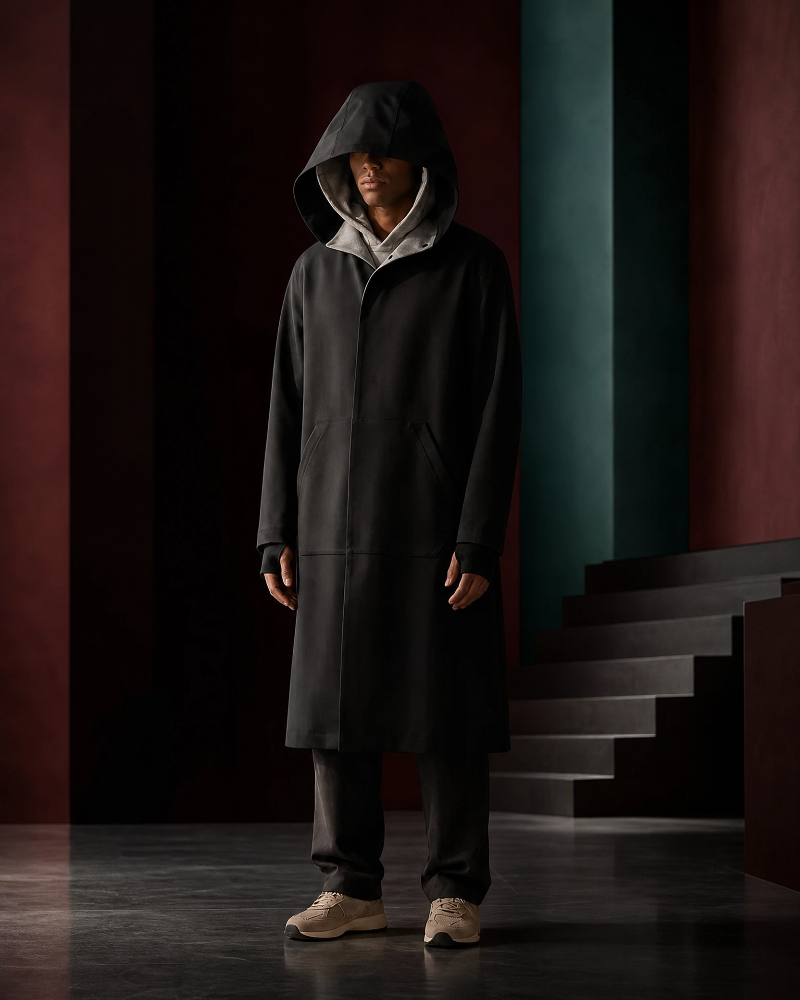
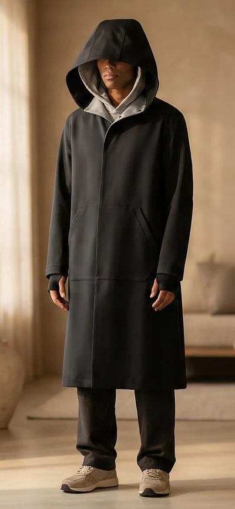
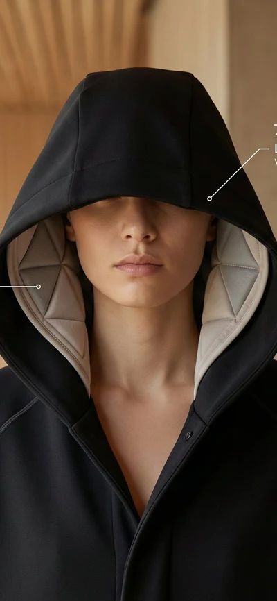
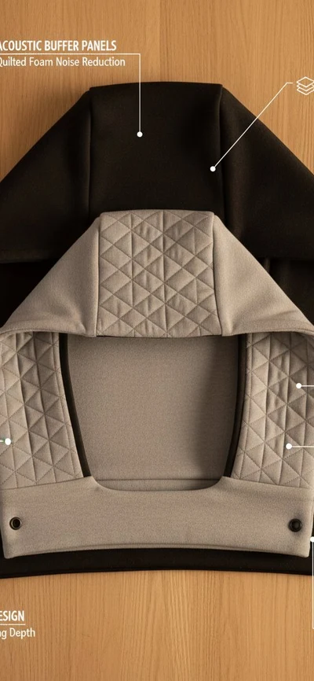

{{ t.hero.eyebrow }}
{{ t.hero.headline }}
{{ t.hero.subheadline }}
{{ t.hero.proof }} — {{ t.hero.availability }}

02 / {{ t.diff.eyebrow }}
{{ t.diff.title }}
{{ diffCard0.label }}
{{ diffCard0.title }}
{{ diffCard0.body }}
{{ diffCard1.label }}
{{ diffCard1.title }}
{{ diffCard1.body }}
{{ diffCard2.label }}
{{ diffCard2.title }}
{{ diffCard2.body }}
{{ t.diff.p2 }}
03 / {{ t.work.eyebrow }}
{{ t.work.title }}
{{ step.num }}
{{ step.title }}
{{ step.body }}
04 / {{ t.journey.eyebrow }}
{{ t.journey.title }}
{{ t.journey.intro }}
{{ item.title }}
{{ item.body }}
{{ item.period }}
05 / {{ t.evidence.eyebrow }}
{{ t.evidence.title }}
{{ t.evidence.intro }}
{{ ev.stat }}
{{ ev.label }}
{{ ev.body }}
07
{{ t.casesIntro.title }}
{{ t.casesIntro.body }}
{{ t.selected.title }}




{{ t.selected.obraCerta.category }}
Obra Certa
{{ t.selected.obraCerta.statement }}
{{ t.selected.obraCerta.start }}
- {{ pb }}
{{ t.selected.obraCerta.role }}
{{ t.selected.obraCerta.status }}




{{ t.selected.neuroLens.category }}
Neuro Lens
{{ t.selected.neuroLens.statement }}
{{ t.selected.neuroLens.start }}
- {{ pb2 }}
{{ t.selected.neuroLens.role }}
{{ t.selected.neuroLens.status }}
08 / {{ t.sensoryshield.eyebrow }}
{{ t.sensoryshield.headline }}
{{ t.sensoryshield.intro }}

{{ t.sensoryshield.ideaLabel }}
{{ t.sensoryshield.idea }}
{{ t.sensoryshield.elementsLabel }}
- {{ el }}
{{ t.sensoryshield.status }}



{{ t.sensoryshield.callout }}
{{ t.sensoryshield.cta }}09
{{ t.jblk.title }}
{{ t.jblk.p1 }}
{{ t.jblk.p2 }}
10
{{ t.lab.title }}
{{ t.lab.intro }}
{{ labModalItem.name }}
{{ labModalItem.body }}
{{ labModalItem.coverLabel }}
{{ t.finalCta.headline }}
{{ t.finalCta.body }}